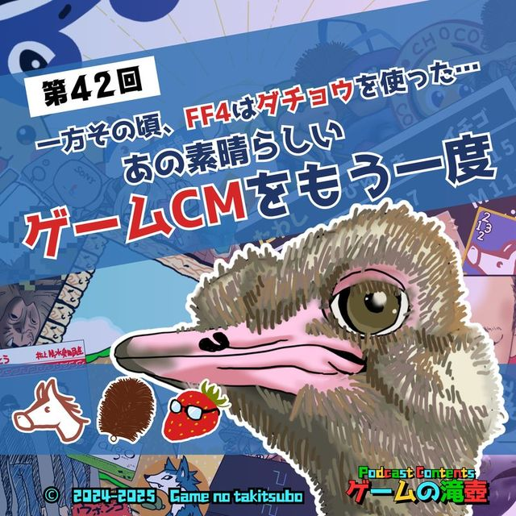

ホーム
エピソード
名物企画
ふさわしいゲーム診断
滝壺データベース
お知らせ
聴き方
おたより
公式X
ブログ
エピソード一覧へ

一方その頃、FF4はダチョウを使った…あの素晴らしいゲームCMをもう一度
#42 ・ 2025.03.12 配信
この回をこのページで再生
（Spotifyプレイヤーを読み込みます）
Spotify
Apple Podcasts
Amazon Music
LISTEN
YouTube
あの頃（90年代～00年代）のゲームCMについて語っております！
📮 この回の感想をおたよりで送る
Xで感想をポスト
GAMES & KEYWORDS
登場ゲームタイトル・キーワード
ブレス オブ ファイアIII
ロックマンDASH
スーパードンキーコング2
モンスターファーム2
ファイナルファンタジーVIII
塊魂
MOTHER2 ギーグの逆襲
ファイナルファンタジーIV
ファイナルファンタジーVI
ファイナルファンタジーV
ファイナルファンタジーXII（ポーション）
ジャンボ尾崎のホールインワン
スーパーマリオRPG
もんすたあ★レース
ピクミン
ピカチュウげんきでちゅう
マリオテニス64
バイオハザード CODE:Veronica
SIREN
ウンジャマ・ラミー
ゼルダの伝説 神々のトライフォース
影牢 ～刻命館 真章～
HUNDRED LINE -最終防衛学園-
Ever 17 - The Out of Infinity
Never 7 - The End of Infinity
真・三國無双
都市伝説解体センター
流行り神
モンスターハンターワイルズ
CHAPTERS
チャプター
00:00
オープニング
01:06
イチィゴォーの選ぶCM
13:48
夜中たわしの選ぶCM
23:31
ひゅうまの選ぶCM
43:15
サチコさんの選ぶCM
48:27
CMまとめ
50:00
滝壺3分ゲーム紹介
56:42
おたより紹介
1:04:38
アートワーククイズ
1:14:13
エンディング
RELATED
関連する回
新春！ 五十音全部にふさわしいゲームタイトルを集めて滝壺かるたを作ろう！
#86
2026.01.07
ふさわしいゲーム
塊魂、双恋、シーマン…今夜決定！ 12星座にふさわしいゲーム！！
#72
2025.10.01
ふさわしいゲーム
わるい敵 ～わるい村 ep03～ 同時上映 リアル桃鉄
#58
2025.07.02
わるい村
← 前の回 #41
不要な怪異は都市伝説解体センターへ！ メガネは必要！！（イチィゴォー談）
次の回 #43 →
モンスターハンターワイルズ「いいハンターってやつは動物に好かれちまうんだ 網タイツも履いちまうんだ」
📮 この回の感想をおたよりで送る
Xで感想をポスト